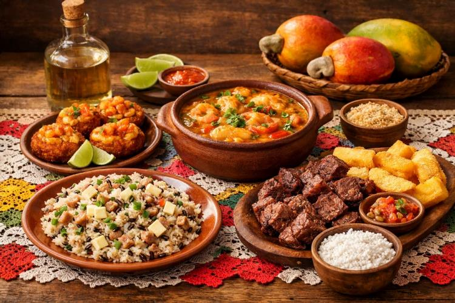
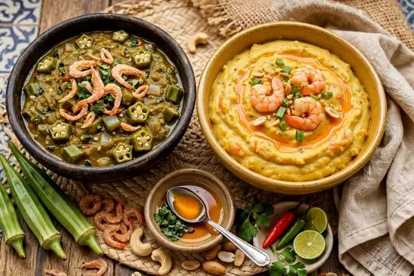
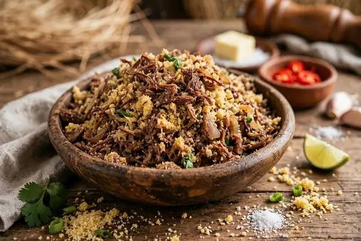
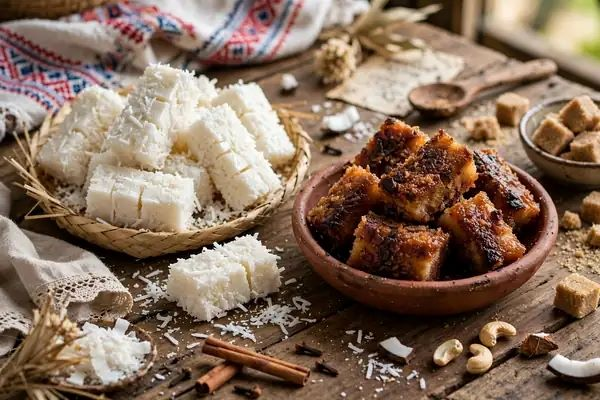

Buchada de Bode
Prato do sertanejo raiz. Vísceras bem temperadas cozidas no bucho.

Dendê, carne de sol, coalho e coco. Uma cozinha que é resistência e festa.
Prato do sertanejo raiz. Vísceras bem temperadas cozidas no bucho.

Base de dendê, camarão, castanha e gengibre. Herança africana viva.

Carne socada no pilão com farinha e cebola. A comida do vaqueiro.

Do Maranhão ao Rio Grande do Norte, o coco vira cocada branca, queimada e baba de moça.